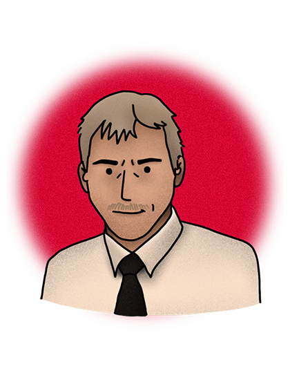
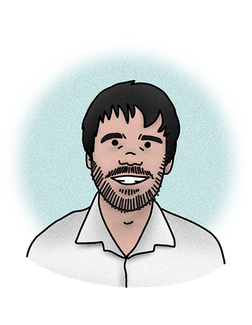
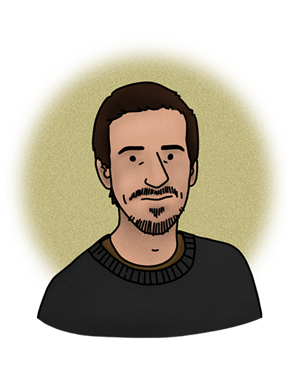
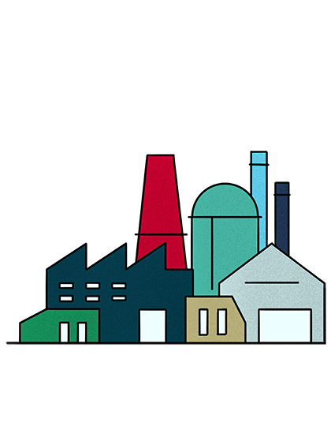

23 minutes - enregistré le 14/12/2021
Depuis 2010, la coopérative mu accompagne les entreprises à intégrer l’environnement dans le développement de produits, de services et dans leur organisation.
Sur chaque projet intervient un triptyque composé de designers, d’ingénieurs et d’experts matériaux. Ensemble ils appliquent une démarche d’éco-conception, celle-ci agit comme boussole et aide à prendre des décisions en évitant les « fausses bonnes idées ».
Margot, responsable du design dans l’entreprise nous explique le déroulé d’un projet et la place que prend l’éco-conception dans les choix retenus.
Mots-clés : coopérative, éco-conception, conseil, analyse de cycle de vie
Site : cooperativemu.com

21 minutes - enregistré le 21/10/2021 à distance
Thierry Supernat, directeur recherche & développement de la société Renz, fabricant de boites aux lettres, retrace les démarches environnementales mises en place au sein de son entreprise.
Depuis 2005 et le lancement de Planète, le premier modèle à connotation environnementale, l’éco-conception a été pleinement intégrée dans l’activité du groupe.
Malgré une posture pro-active sur les sujets environnementaux, Renz se heurte couramment à un manque de réceptivité de ses clients.
Pour garantir son activité face à la décroissance du courrier traditionnel en faveur des livraisons et des colis, Renz a dû basculer de la fabrication de boites aux lettres classiques à celle de casiers connectés.
Mots-clés : boites aux lettres, industrie, éco-conception, numérisation, e-commerce
Site : renzgroup.fr
19 minutes – enregistré le 19/11/2021
Avec un ami d’école, Nathanaël se spécialise rapidement dans le design de mobilier et crée son propre studio. L’envie leur vient de se détacher des mécanismes de l’édition et ils lancent SLEAN en 2019. En réponse à la crise sanitaire, ils décident de s’attaquer au marché du télétravail en imaginant des équipements adaptés à l’environnement domestique.
Nathanaël, revient ici sur les étapes du projet, de l'idée jusqu’à l’industrialisation en France, tout en se détachant du monde l’édition pour garder la main sur l’ensemble des choix effectués.
Mots-clés : mobilier, entreprenariat, fabriqué en France
Site : slean.com
25 minutes - enregistré le 8/12/2021
En 2012, après son diplôme de l’Ensci, Florian crée l’espace atelier de la réserve des arts et fonde en parallèle l’Atelier TAC. Cette coopérative de 4 salariés conçoit et fabrique du mobilier sur mesure à partir de matériaux de réemploi.
Cette initiative vise à réduire les ressources utilisées dans la conception de meubles, à s’assurer de répondre à un vrai besoin grâce au sur-mesure.
Malgré ses contraintes intrinsèques, Florian envisage le réemploi comme une opportunité créative dans la conception. La philosophie de l’atelier Tac est prendre soin de l’environnement, des autres et de soi.
Florian étant bègue, la piste audio a été retravaillée avec son accord.
Mots-clés : réemploi, coopérative, mobilier, sur-mesure
Site : ateliertac.fr
24 minutes – enregistré le 11/01/2022 à distance
En 2014, pour son mémoire de l’Ensci, Stéphanie travaille sur l’économie circulaire. Elle remarque que les outils disponibles, notamment en éco-conception, ne sont pas adaptés à une pratique du design centrée utilisateur.
Stéphanie choisit finalement de ne pas poursuivre dans le champ de l’économie circulaire et rejoint la RATP en sortie d’école. Aujourd’hui chargée d’étude design en mobilier urbain, elle s’épanouit dans son métier par le fait de travailler pour un projet qui a du sens : la mobilité douce et collective pour le grand Paris.
Mots-clés : mobilité, économie-circulaire, sens au travail
Site : ratpgroup.com

21 minutes – enregistré le 10/01/2022 à distance
Adrien présente Commown, la coopérative qu’il a co-fondé et pour laquelle il travaille depuis 2017.
Leur constat : un modèle de téléphone éco-conçu tel que le fairphone ne peut exister dans le temps sans son modèle économique adapté. Commown propose donc une offre de location de périphériques numériques à destination des particuliers et des entreprises. La durée de vie des produits est ainsi prolongée grâce à l’économie de la fonctionnalité.
A travers sa coopérative, Adrien milite pour un numérique plus sobre. Il nous expose les mesures radicales qu’il serait urgent de mettre en place ainsi que les différents engagements individuels à mettre en place pour restreindre l’impact du numérique.
Des problèmes techniques survenus lors de l’enregistrement en visio ont altéré la qualité sonore sans toutefois altérer la qualité du contenu.
Mots-clés : numérique, économie de la fonctionnalité, militant, sobriété
Site : commown.coop
32 minutes – enregistré le 11/11/2021
En 2009, à la suite de la faillite de Camif, Emery Jacquillat reprend l’entreprise avec la volonté de lui faire prendre un virage sur l’axe de la durabilité.
En 10 ans, la Camif s’est efforcée à renforcer son implantation sur son territoire, créer des emplois, dynamiser ses liens avec ses fournisseurs français.
En tant que pionnière de la société à mission, elle cherche, à l’aide de mesure fortes, à rendre concrets les piliers définis dans sa raison d’être : « Proposer des produits et services pour la maison au bénéfice de l’Homme et de la planète. Mobiliser notre écosystème, collaborer et agir pour inventer de nouveaux modèles de consommation, de production et d’organisation. »
Mots-clés : mobilier, fabriqué en France, société à mission
Site : camif.fr

35 minutes – enregistré les 03 et 27/12/2021 en partie à distance
Après une formation d’ingénieur designer, Quentin rejoint le Low-tech Lab en service civique. Cette structure associative recense, expérimente, documente et diffuse des low-techs. Définies comme « des objets, des systèmes, des techniques, des services, des savoir-faire, des pratiques, des modes de vie et même des courants de pensée, qui intègrent la technologie selon trois grands principes : utile, durable, accessible »
En requestionnant nos besoins essentiels et les façons d’y subvenir, l’étude des low-tech permet de réfléchir plus largement et d’imaginer de nouveaux modèles de fonctionnement pour nos sociétés.
Mots-clés : low-tech, association, pédagogie, société
Site : lowtechlab.org

17 minutes
Suivez la journée d’un jeune homme à la recherche de réponses. Les situations et rencontres qui rythment son parcours sont pour lui des sujets de réflexions et laissent transparaître les doutes qui l’envahissent.
Sur quel chemin s’engager ? Quel projet professionnel choisir ? Comment employer au mieux ses compétences acquises au cours de sa formation de créateur industriel ?